My name is Jeremy Ricketts and I'm ready to do good great work at Planning Center Online.
951.743.1224 // email@jeremyricketts.com // @jeremyricketts
Jeff & Aaron's Questions
Name a couple technologies or frameworks that that excite you. Why? What experience do you have with them?
- SASS (& Compass) - Much of my current job involves front end development. SASS made this work fun again. I won't go back to vanilla CSS. I won't.
- SMACSS - Snook is a genius. I worked on the redesign of Mail.com which sees a lot of traffic. Everything had to be modular and efficient and these principles were key.
- Jekyll - My first foray into ruby is Jekyll. I've been building small static sites on it for the past year now. If it doesn't need a CMS, I'm building everything in Jekyll from now on.
- Rails - Just getting started with Rails. I've worked with Django before and with .NET's MVC framework, but Rails is the granddaddy of them all. I'm about half way into this epic tutorial a few guys at Build Guild recommended.
- jQuery - I can't believe I added this, but look… I started learning js during the framework wars. Remember MooTools? A year of my life was spent maintaining Toyota.com which was built with Prototype and Scriptaculous. People take jQuery for granted now. If I ever see John Resig in person, I'm buying him a beer.
- Backbone.js - I did design and front end work for a mobile web app with a former Planning Center employee Scott Motte. What a great dude. It was my first exposure to Backbone and the project went well. I'd like to use it again.
- AngularJS - We use Knockout extensively at my day job. At first, I thought Angular was the same exact thing. About a month ago, friend of mine gave me a whirlwind tour of it and from what I see, it looks a lot more powerful. I haven't used it yet though.
What is your current favorite web app and why?
This answer probably changes every couple weeks, but recently I've been very impressed with Forecast.io (of "Dark Sky" app fame.) Go take a look. More importantly, go take a look on your phone (install the app from the web) and watch how fast and smooth it is. Their blog post on how it was made was a real eye opener for me. Also, check out Forecast's Lines, API, and Skycons.
This web app is no where as complex or important as Github, Gmail, etc. I just love it when small teams set out to push the limits of a platform (in this case, the web) and then show us how they're doing it along the way. Especially when Mark Zuckerberg is out there blaming HTML5 for Facebook's falling share prices.
Describe how you would make a peanut butter and jelly sandwich and get as crazy or creative or direct as you like.
Requirements:
- Instructions must be brief.
- Instructions must be understandable by a the widest audience possible (ages, cultures, tongues).
- Our target audience is adolescent or adult humans, on planet earth. They know what a jar is. They know what a knife is.
Solution: IKEA-style visual instructions.
1.
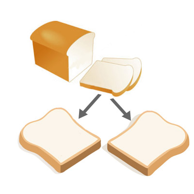2.

3.

4.
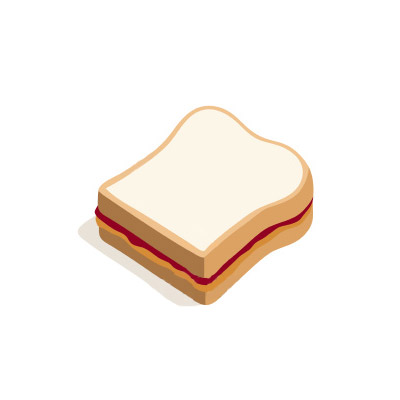Fix this code and update it to the latest jQuery API. You can return results in CoffeeScript if you like:
element_name = container + " .plan"
$(element_name).die().live('click', function(el) {
$(el).hide()
});
My answer. See it working on this JS fiddle.
// In keeping with the example code, let "container" be defined outside the main function:
container = ".test";
// Since live/die are deprecated, let's use on/off instead.
// Let's also remove any event listeners of the same type ("click") in keeping with the example:
$(container).off("click", ".plan").on("click", ".plan", function() {
$(this).hide();
});
Now is a good time to mention I've never used CoffeeScript.
What are some of your favorite design and development resources (blogs, communities, books, etc.)?
I used to think I had to be up on every single bit of webdev and design news the moment it came out. I was a little addicted to Google Reader. When I moved down to Carlsbad from LA a 3 years ago, I simplified things. Part of that meant cutting out TechCrunch, Hacker News, and the like.
Here are the ones that survived:
Design:
- The Industry - Podcast, blog, and web design news curator. Run by Adam Stacoviak (part of the SASS Team) and Carlsbad California's very own Drew Wilson.
- Swiss Miss - A swiss designer in Brooklyn who curates a wonderful blog on design.
- Sam Brown - Excellent articles on design and some front end dev.
- Baymard Institute Blog - Articles on usability, conversion science, and mobile UI.
- Brent Jackson - I spent new years with this guy and although I knew he was one of the best designers I've ever met, I didn't know he was a good writer as well. This is a great little read.
- Dribbble - What Github is to devs, Dribble is to designers. I don't post a lot, but I like seeing what the best of the best are up to.
- Cameron Moll's Blog - Great articles on design.
- Mark Boulton's Blog - One of my all time favorite designers.
- TBD, Best Web Gallery, Awwwards and Styleboost - Collections of well designed websites.
- Lovely Package - One day I want to design things in the physical world.
Front End Dev:
- Addy Osmani's Blog - Main guy behind Yeoman and a very accessible writer on javascript. He maintains an amazing Backbone.js App Developement tutorial/book as well.
- Nicholas Gallagher's Blog - The brilliant dude behind Normalize.css which has come to replace the standard CSS reset everyone used to use.
- Paul Irish's Blog - Lead dev for Modernizr, HTML5 Boilerplate, Yeoman, and on the Chrome dev team.
- Paul Stamatiou - He doesn't write a lot, but when he does, the articles are often well written and relevant.
- Smashing Magazine - The articles here are either 100% useless (see "Desktop Wallpaper Calendar" posts) or 100% brilliant (see "Responsive Web Design With Physical Units".)
- Web Appers - Fun little resources and goodies for front end devs.
- Steve Souders' Blog - This man is seriously obsessed with web performance.
- John Resig's Blog - Enough said.
- Jeremy Keith's Blog - Front end developer and designer.
Back End Dev:
- PeepCode - Purchasable, high quality screencasts.
- TreeHouse - Learn by screencasts and tutorials.
- Jeff Atwood's Blog - Yes, he's primarily a .NET developer. But we can forgive him for it. After all, he built StackOverflow.
- RailsCasts - Wonderful learning resource and lots of free screencasts. Sometimes watching is nicer than reading.
- Dr Nic's Blog - Even though I'm just learning Rails, I keep making my way back to his blog or some plugin he's written.
- Merbist - Rails and programming related articles.
Life, Tech, and Fun: (even though you didn't ask)
- Paul Graham's Blog - He doesn't write a lot, but when he does, it's usually great. "Cities and Ambition" really changed my thinking on where I saw myself living. Wow, that was 5 years ago!
- 37 Signals Blog - Unusually good. Usually.
- Aeon Magazine - It's kind of a science'y humanistic wonderland.
- Yewknee - Michael Eades is a wonderful curator. He's a front end developer as well and we seem to have the same taste in music and design.
- kottke.org - Once a week or so, I'll flick through Kottke. Always interesting.
- xkcd and The Oatmeal - The only web comics I read with any regularity.
- Devour - Time waster for sure. It is really well curated though. I have to resist starting my day out this way.
- McSweeney's - Once a month or so I'll drop in to read some funny stuff.
- Bad Astronomy - Phil Plait is one ornery astronomer. Who I love.
Please respond to this sample customer support email regarding Resources:
“Hi support! I've been using Resources and it's been great so far, but I had some questions. I see that I can create events, rooms or resources, but I can also create folders on each of those pages. What would folders be used for? I also noticed in your last blog post on Room Setups, you posted some pictures of some room setups. Is there a Room Setup picture editor in the program, and if not can you add that? Thanks.”
Hi there! First off, thank you for helping us beta test Planning Center Resources. We're trying very hard to make this product intuitive and useful when it launches in a few months. Your feedback and your questions are a big part of that and we genuinely appreciate it.
Folders - Some churches are managing a lot of events, rooms, and resources. Folders are an optional way of splitting these up so the list becomes more manageable. For example, a church that is expanding into a second building might organize their rooms into two folders: "East Building" and "West Building."
Another advantage to folders is this: let's say you have a room called "Nursery" in both the East and the West buildings. Normally, the system won't allow you to have two rooms (or events or resources) with the exact same names. By putting rooms in different folders, you'll be able to have a "Nursery" in the "East Building" folder as well as a "Nursery" in the "West Building" folder.
Room Setup diagram editor - It's a great idea. We've talked about creating an in-product image editor for creating room diagrams. In the end, we decided to shelve the idea for now. As we learned with Planning Center Services, the core features have to work very well before we can start adding complex pieces (like a browser-based image editor.) Resources is a young product so there's a list of small but significant features we need to launch before tackling something like that.
Remember, you can add any image file as a room diagram. Most people use a sharpie, some paper, and a scanner. However, we've seen some customers sketch the rooms out on a white board, snap a picture with their phone, and use the picture as the diagram. It's low tech but it's fast and simple!
Thanks again for the question and the suggestion.
~ Jeremy at Planning Center Online
Look at a resource page on Resources. Look through all the content on the page and the dialogs and tell us the best change that could be made to make the page more usable.
Please give us either your salary history or salary requirements.
I'll send an email about this one!
Product Manager Application
In looking at the current version of Resources, there already appears to be basic inventory management. When a resource is added to an account, a quantity for that resource is defined by the user. When resources are requested (and approved) the quantity of the resource goes down by the number approved. If the current quantity of a resource is zero, it can't be requested. This, to me, looks like "Stage One" inventory management in Resources.
After spending some time with Resources, I had some other ideas for potentially more unique features. Here are the three larger ones I've been thinking about:
1) More tightly coupling resources with rooms:
- "What" you want to use is important but "where" you want to use it could also be relevant. I got to thinking about how this would look if resources were assigned to rooms. This would mean changing the event registration modal of course, so perhaps this is less of a new feature and more of a system tweak.
- This could open up a new area of exploration for Resources: knowing where resources are at any given moment, or where they were last checked out. Someone didn't put rolling TV unit #8 back in the storage room? Let's see where it was last used. You could even make a resource allocation map that shows you where everything is at a glance.
- What happens if someone needs a resource, but will not be using it in a specific room? This brings me to…
2) Off site events:
- Not all church events take place at the church campus. Events like youth outings, outreaches, and community work may take place elsewhere. If resources will be used off site, requesters would still need to tell the approvers where the resources will be used.
- Maybe there are some resources you don't want to go off site. This brings me to…
3) Resource restrictions:
- By default, a resource should be able to be used anywhere. However, there are some that shouldn't (or can't) be used in certain rooms or for off site events. Consider the following examples:
- A 12' tall plastic Christmas tree that only fits in 3 of the 10 rooms.
- An organ on wheels that can't be moved up stairs (first floor rooms only.)
- A hot coffee station that is not allowed in the nursery.
- A roller TV that's not allowed in the kitchen.
- A particularly expensive overhead projector that's not allowed off site.
- Speakers that shouldn't be used in the library.
- A room that is limited to 200 chairs due to fire codes.
My purpose in sharing these additional ideas is to show that I can think critically about a complex system and that I'm familiar with the resource management needs of a church.
Okay. Back to the questions. ☺
Please write us an example blog post describing your ideas for some new Inventory Management features we could integrate into Resources. Inventory Management could potentially be an entire application, but we're looking for "Stage One" of implementing inventory features into Resources, so don't get too ambitious. The blog post should be written as if the features are complete and you are explaining them to our customers.
Planning Center Resources: Resource Shortages
Planning Center Resources is all about better communication between resource managers and the people that need those rooms and resources. Part of that is knowing when there's simply not enough of a resource to go around. Identifying shortages is now a little easier with the new "Report a shortage" tool.
Here's how it works:
 1) If there are unavailable resources for the event you're setting up, you will 2) have the option of reporting a resource shortage.
1) If there are unavailable resources for the event you're setting up, you will 2) have the option of reporting a resource shortage.
 3) Select which resources you would have booked, had they been available.
3) Select which resources you would have booked, had they been available.
 4) Submitting your shortage report will do two things: First, in the resource details, managers will be able to see how often the resource was reported short. Second, the shortage will be added to your event discussion.
4) Submitting your shortage report will do two things: First, in the resource details, managers will be able to see how often the resource was reported short. Second, the shortage will be added to your event discussion.
By submitting reporting shortages, resource managers will know when they need to procure another rolling TV stand, coffee cart, folding table, or any of the other things it takes to keep your church building, well… resourceful!
Separate from the blog post, send us any extra developer/designer details that you would communicate to them as they are designing and developing your features. These would be any technical or design considerations that would probably be too much info to describe to users, but might be critical knowledge of the inner-workings. For instance, I might publicize in a blog "You can now duplicate event reservations. Just hover over an existing reservation and click the new duplicate button." I'd also have to tell my developers "When duplicating an event, reset all statuses to pending and ask the user to choose new dates for the duplicated event." I'd probably be more detailed than that, but you get the idea.
Dev
- A shortage report should tell the resource manager this: someone had an event and needed an X. They couldn't reserve an X because there wasn't enough inventory of that resource. The event day came and they didn't have an X (no X's opened up.)
- A shortage status on a resource should be an on/off status.
- Shortage reports are removed ("off") when the resource has been reserved for the event (there wasn't enough X, a shortage report was flagged, and then X became available and the event organizer added it before the start of the event.) This effectively nullifies the shortage report.
- For a shortage report to count as part of the resource shortage statistics it must active ("on") when the associated event starts.
- Validation: There does not need to be any "this item was already reported short for this event." messaging. There is no way to remove a shortage report other than 1) canceling/deleting the event before the starting time or 2) adding it to the event when inventory loosens up.
- For repeating events, do not count a shortage report on every repeated date. Only the initial one.
Design
- Design for this feature should be subtle. If all the resources and/or rooms are available for an event, don't even show the option.
- This feature (at least the reporting tool) will live in the Edit Event modal window. I'm guessing stacked modal windows is something we want to avoid, so we need to be clever about integrating it into the Edit Event modal itself.
Future scope expansion
- Alerting event schedulers when a resource previously reported short becomes available.
- "Alert me when one of these is available."
- "Automatically add this resource if/when it becomes available."
- A dashboard for approvers to see shortage reports across all resources (rather than having to go to the individual resource details pages.)
Send us some sort of graphical representation of the interface for your feature. This can be a picture of a drawing, simple wireframes, or anything at all that gives us a clear idea of how it would work. We don't expect anything near pixel-perfect images since this is not a design position, but your images would be an example of what you might then hand off to the designer who would create the actual artwork. Feel free to include these images in your blog post or send them separately.
 The blog post shows the key screens for the user that is scheduling the event. The only thing I didn't mock up was a simple success message after the shortage report goes through.
The blog post shows the key screens for the user that is scheduling the event. The only thing I didn't mock up was a simple success message after the shortage report goes through.
The other piece of this would be the "Resource Details" page. We'd need to convey how many events this resource has been short on. The design goals would be: 1) show at a glance how dire the situation is with this resource. Is it only one person who reports a shortage or are lots of users reporting the same shortage? 2) when the shortages occur along a timeline. Is it always in short supply or is it only on Easter Sunday?
Recent Work
Included below are a few real examples of the types of project management work and product direction I've been doing at HireAHelper for the past 3 years.
These resources might feel a little random. Our CEO is a little sensitive about showing internal stuff, so there's a limit amount of things I can confidently show.
Project: HireAHelper Company Wiki
The HireAHelper company wiki was an initiative of mine once our company grew to about 10 people. At this point, information was spread among many individuals, we constantly lost track of company information, and we were wasting time tracking things down.
Skill showcase: Identifying a need, taking ownership, finding a solution, garnering team buy-in.
This video is a little long (woops!)
Copy Writing.
I can write copy 'til the cows come home. Here are some examples:
- Homepage - Short, punchy copy. (Unless you receive the "minimalist" test variation where there's essentially NO copy.)
- How It Works - Lots to communicate in as few words as possible.
- FAQ - This page is 3,207 words of carefully crafted, legal-department-approved copy. Even if it's boring copy, I can write it.
Presentations
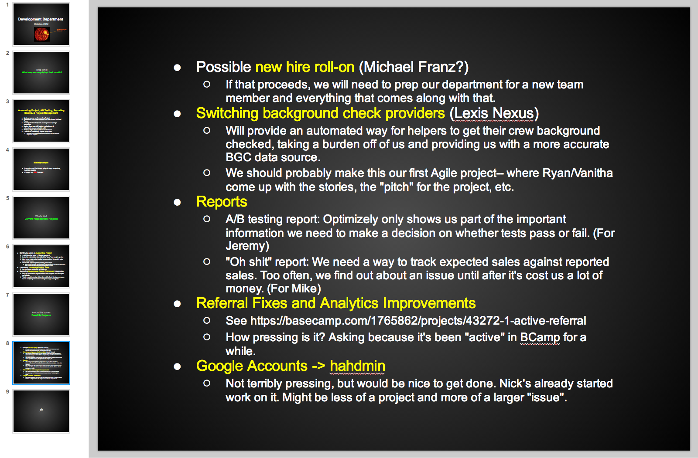Internal/team presentation:
At HireAHelper I presented the current progress of the dev team every couple months. This was a higher level meeting to other department heads and sometimes investors.
{kind=link}
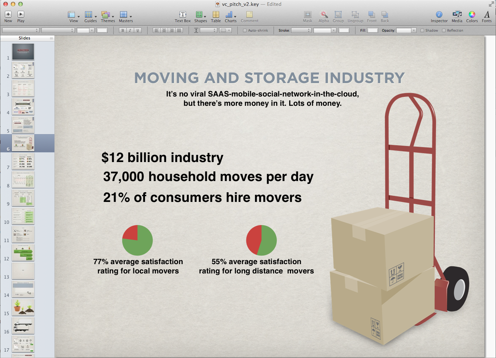External/partner presentations:
As a young startup, we were constantly pitching VC's and potential partners. Here's a sample.
{kind=link}
Project Kickoff Meetings
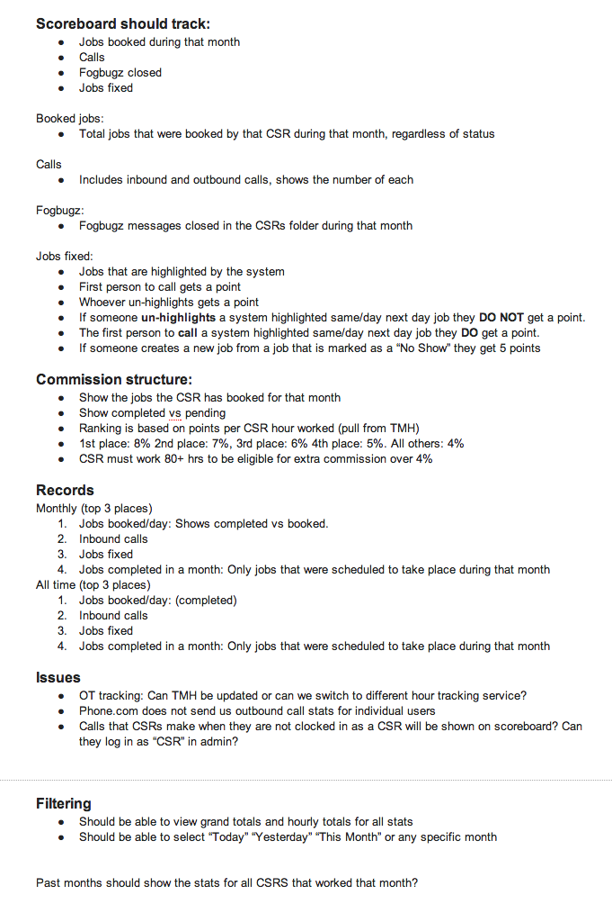Kickoff meetings are when you first start talking about a project. What does this thing need to do? What are the major concerns? How does the thing need to generally work?
After that, we'd define all the user stories and then, finally, meet with the dev team to project the size of the project and get an idea of how long it could potentially take.
{kind=link}
 Here is another example of a project management kickoff I prepared for.
Here is another example of a project management kickoff I prepared for.
In this example, I made some quick-and dirty mockups of how the UI might work.
Time-Projecting for Projects (defining requirements, scope, level-of-effort, etc)
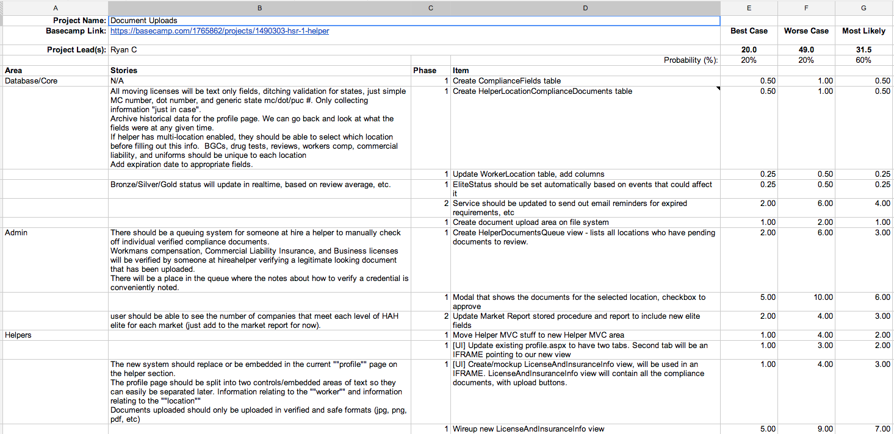Even though our team tries to adhere to the "Agile" development process, we often needed to find a ball-park figure of how long the project would take. This meant splitting it out into its largest chunks, estimating a best/worst case scenario, and reporting back to the group. (You have to be very careful with doing this, if you're truly trying to be an "Agile" shop. It's hard.)
{kind=link}
Bug Reporting
Skill showcase: Taking ownership and making a quick-and-dirty solution when the need was great.
At HireAHelper, I took on the ownership of how bugs were reported by our staff. I built a form in our admin panel which asked some questions and then posted directly into GitHub issues.
 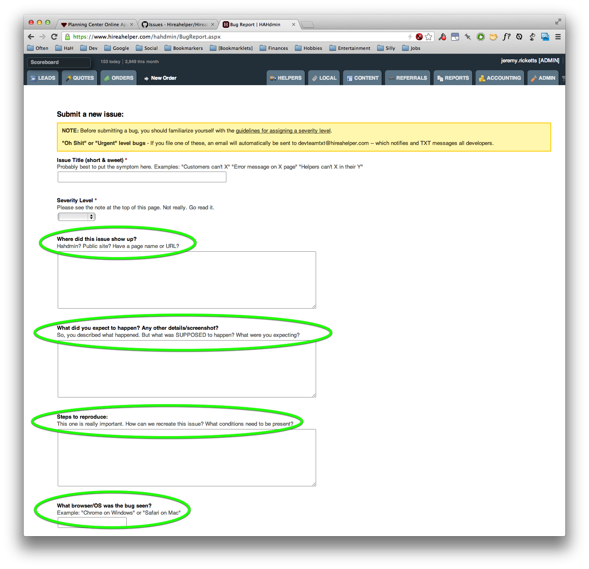Here's what the form looks like in our admin panel, and what it generates in github issues. It's worked pretty well!
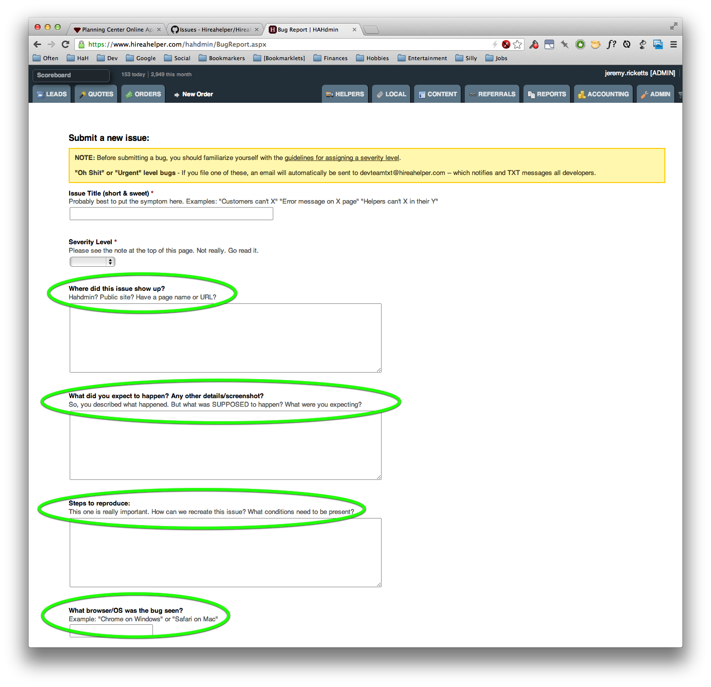Here's what the form looks like in our admin panel, and what it generates in github issues. It's worked pretty well!
{kind=link}

 I like to go the extra mile for bug reporting. I almost always include a screenshot so people know exactly what I'm talking about.
I like to go the extra mile for bug reporting. I almost always include a screenshot so people know exactly what I'm talking about.
Business Metrics
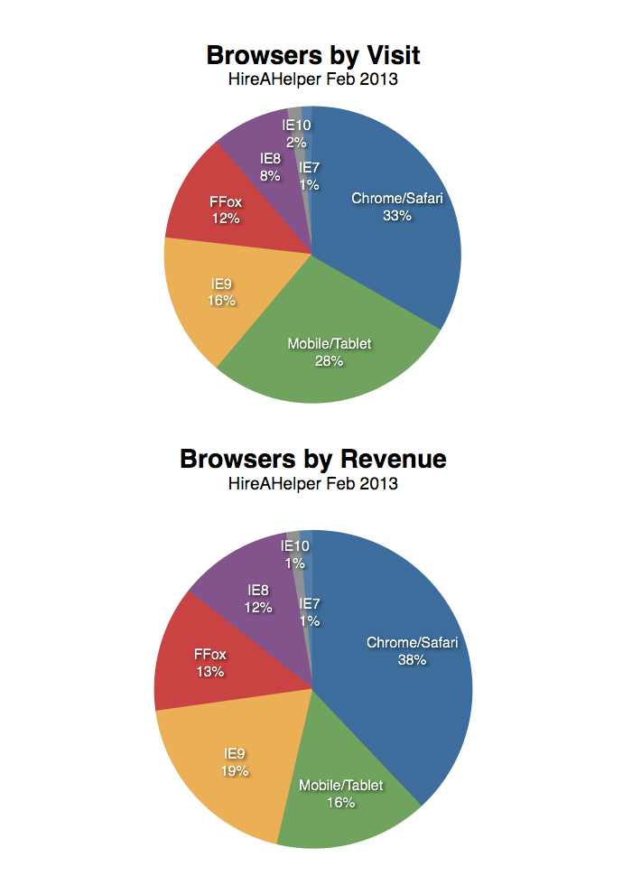I try to keep a pulse on things.
{kind=link}
In this example, I set an alert in Google Analytics to tell me when our IE7 usage had dropped below a certain threshold. After all, there's no sense supporting a browser that takes 20% of our front-end-dev effort, but doesn't bring any revenue.
Skill showcase: Taking initiative to track something no one else was tracking, and then presenting my findings in a compelling way.
Technical Design
 Because I come from a technical background, I can often help define a project in ways that developers understand.
Because I come from a technical background, I can often help define a project in ways that developers understand.
In this example, I know that it makes sense to think of RESTful api's in terms of their URL structure. By bringing this document to the initial kickoff meeting, we were able to jump into the API design immediately.
Sample Project Leadership: Customer Service Dashboards
Another example that showcases my ability to direct a project.
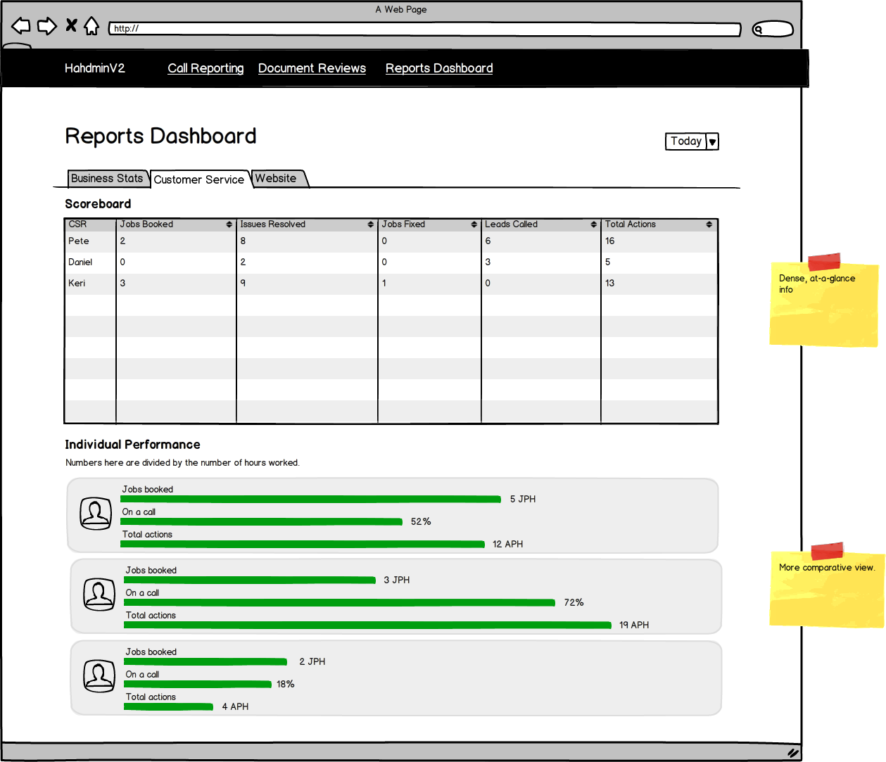 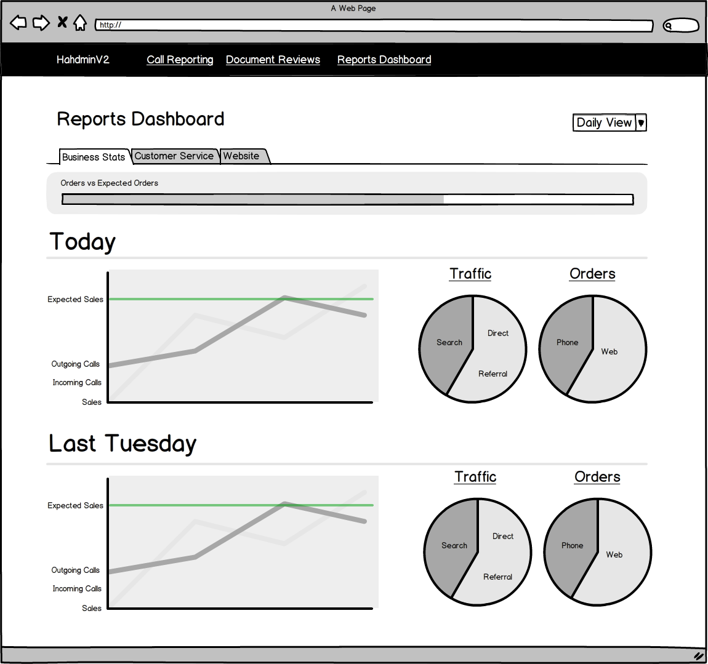I came to this meeting with some quick-and-dirty mockups for a customer service rep dashboard. As a team, we talked about what the dashboard should and shouldn't do.
{kind=link}
{kind=link}
 After thinking about the functionality and looking at some UI mockups, we had to do some negotiating among us. What features should be a part of a minimally viable product? What features can be bundled together for a v2 of the system?
After thinking about the functionality and looking at some UI mockups, we had to do some negotiating among us. What features should be a part of a minimally viable product? What features can be bundled together for a v2 of the system?